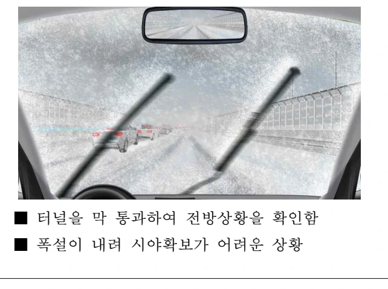

837. Hai cách lái xe nào an toàn trong tình huống giao thông trên đường tuyết rơi?

- ①Khi tuyết dày làm mất dấu vạch kẻ, đi theo dấu bánh xe trước.
- ②Trên đường tuyết hoặc đường băng, quãng đường phanh ngắn lại nên cần giữ khoảng cách an toàn lớn hơn bình thường.
- ③Khi tuyết rơi dày, khu vực lối vào và ra khỏi hầm là đoạn đường thường xuyên đóng băng, cần đề phòng va chạm liên hoàn do trơn trượt.
- ④Trên đoạn đường bị đóng băng, phải giảm tốc độ tối đa xuống 20% so với bình thường.
- ⑤Sau khi đi qua hầm, có thể bị mất thị lực tạm thời do hiện tượng thích nghi với bóng tối, cần phải cẩn thận.
Xem đáp án
Đáp án
① Khi tuyết dày làm mất dấu vạch kẻ, đi theo dấu bánh xe trước.
③ Khi tuyết rơi dày, khu vực lối vào và ra khỏi hầm là đoạn đường thường xuyên đóng băng, cần đề phòng va chạm liên hoàn do trơn trượt.
Căn cứ
② Khi có tuyết, mưa hoặc sương mù, khoảng cách phanh sẽ dài hơn nên bạn nên chừa khoảng cách an toàn lớn hơn bình thường. ④ Trên đường có băng, tốc độ tối đa phải giảm 50/100. ⑤ Khi đi qua đường hầm khi tuyết rơi dày, bạn có thể bị giảm thị lực tạm thời do thích ứng với ánh sáng khi đột ngột chuyển từ nơi tối sang nơi sáng.
Phần căn cứ là bản dịch máy để tham khảo.